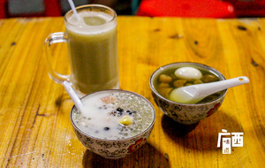

北海美食推荐
- 越乡小厨
- No.1
- 懒惰牛 的最新点评
- 网红店果然已经排队，人还超级的多。店铺门面不大排挡风格，门口有不少散座，等位的凳子直接摆到了街上。进门右手边有一排海鲜水产缸，里面的海鲜....
- 鲨渔湾海鲜美食
- No.2
- WinKing 的最新点评
- 鲨渔湾海鲜美食总店在北海银滩中路广东路乐途酒店北，分店在北海老街。是名列北海美食榜前列的餐馆。口碑较好的有椒盐皮皮虾，蒸贵妃螺，蒜粉蒸沙...
- 
- 24栋糖水店
- No.3
- 筱风姿 的最新点评
- 『低调的奢华』探店团打卡[爱]吃喝玩乐有态度，探店打卡有追求。 做真实的自己，低调探索生活中的乐趣筱风姿春节囧途记店...
- 食悦川菜(涠洲岛店)
- No.4
- xinyonhu 的最新点评
- 在涠洲岛两天一直在这家吃，能吃辣的朋友一定要点香辣口味，里面豆瓣酱太香了！！！！！我们都是在门口左边的占市场买活的海鲜回来加工(装海鲜的时...
- 李姨虾饼店
- No.5
- 养鱼鱼 的最新点评
- 第一份是李阿姨的 排了十几分钟队 感觉没有传的那么神有点硬了 第二份是第二天在隔壁买的 个人口味更喜欢 面糊稀一点 所以外皮更酥脆 里面更绵软 ...
- 七七家的糖水店
- No.6
- 雪花单 的最新点评
- 『低调的奢华』探店团打卡[爱] 丨吃喝玩乐有态度，探店打卡有追求。 做真实的自己，低调探索生活中的乐趣风姿春节囧途记七...
- 梁记叉烧包
- No.7
- 时间撒旦 的最新点评
- 我是看网推去吃的，但是个人不怎么喜欢吃，叉烧包很大然后味道甜甜的。喜欢吃偏甜的的可以一试。3.5RMB一个
- 花乐餐厅(涠洲岛店)
- No.8
- 哈吉 的最新点评
- 在涠洲岛的南湾街上，靠近酒吧街。名列涠洲岛美食环境榜榜首。门脸很小，环境一般。但海鲜新鲜。餐厅面朝大海，能看着鳄鱼山进餐。热门菜有蒜蓉蒸...